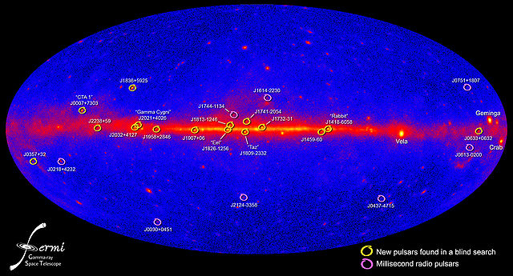

A pulsar (from pulse and -ar as in quasar) is a highly magnetized, rotating neutron star or white dwarf, that emits a beam of electromagnetic radiation. This radiation can be observed only when the beam of emission is pointing toward Earth (much like the way a lighthouse can be seen only when the light is pointed in the direction of an observer), and is responsible for the pulsed appearance of emission. Neutron stars are very dense, and have short, regular rotational periods. This produces a very precise interval between pulses that range from milliseconds to seconds for an individual pulsar. Pulsars are believed to be one of the candidates of the observed ultra-high-energy cosmic rays (see also centrifugal mechanism of acceleration).
Formation, mechanism, turn off
The events leading to the formation of a pulsar begin when the core of a massive star is compressed during a supernova, which collapses into a neutron star. The neutron star retains most of its angular momentum, and since it has only a tiny fraction of its progenitor's radius (and therefore its moment of inertia is sharply reduced), it is formed with very high rotation speed. A beam of radiation is emitted along the magnetic axis of the pulsar, which spins along with the rotation of the neutron star. The magnetic axis of the pulsar determines the direction of the electromagnetic beam, with the magnetic axis not necessarily being the same as its rotational axis. This misalignment causes the beam to be seen once for every rotation of the neutron star, which leads to the "pulsed" nature of its appearance.
In rotation-powered pulsars, the beam originates from the rotational energy of the neutron star, which generates an electrical field from the movement of the very strong magnetic field, resulting in the acceleration of protons and electrons on the star surface and the creation of an electromagnetic beam emanating from the poles of the magnetic field. This rotation slows down over time as electromagnetic power is emitted. When a pulsar's spin period slows down sufficiently, the radio pulsar mechanism is believed to turn off (the so-called "death line"). This turn-off seems to take place after about 10–100 million years, which means of all the neutron stars born in the 13.6 billion year age of the universe, around 99% no longer pulsate.
Though the general picture of pulsars as rapidly rotating neutron stars is widely accepted, Werner Becker of the Max Planck Institute for Extraterrestrial Physics said in 2006, "The theory of how pulsars emit their radiation is still in its infancy, even after nearly forty years of work."
Categories
Three distinct classes of pulsars are currently known to astronomers, according to the source of the power of the electromagnetic radiation:
- Rotation-powered pulsars, where the loss of rotational energy of the star provides the power.
- Accretion-powered pulsars (accounting for most but not all X-ray pulsars), where the gravitational potential energy of accreted matter is the power source (producing X-rays that are observable from the Earth)
- Magnetars, where the decay of an extremely strong magnetic field provides the electromagnetic power.
Although all three classes of objects are neutron stars, their observable behavior and the underlying physics are quite different. There are, however, connections. For example, X-ray pulsars are probably old rotationally-powered pulsars that have already lost most of their power, and have only become visible again after their binary companions had expanded and began transferring matter on to the neutron star. The process of accretion can in turn transfer enough angular momentum to the neutron star to "recycle" it as a rotation-powered millisecond pulsar. As this matter lands on the neutron star, it is thought to "bury" the magnetic field of the neutron star (although the details are unclear), leaving millisecond pulsars with magnetic fields 1000-10,000 times weaker than average pulsars. This low magnetic field is less effective at slowing the pulsar's rotation, so millisecond pulsars live for billions of years, making them the oldest known pulsars. Millisecond pulsars are seen in globular clusters, which stopped forming neutron stars billions of years ago.
Of interest to the study of the state of the matter in a neutron star are the glitches observed in the rotation velocity of the neutron star. This velocity is decreasing slowly but steadily, except by sudden variations. One model put forward to explain these glitches is that they are the result of "starquakes" that adjust the crust of the neutron star. Models where the glitch is due to a decoupling of the possibly superconducting interior of the star have also been advanced. In both cases, the star's moment of inertia changes, but its angular momentum does not, resulting in a change in rotation rate.
Disrupted recycled pulsar
When two massive stars are born close together from the same cloud of gas, they can form a binary system and orbit each other from birth. If those two stars are at least a few times as massive as our sun, their lives will both end in supernova explosions. The more massive star explodes first, leaving behind a neutron star. If the explosion does not kick the second star away, the binary system survives. The neutron star can now be visible as a radio pulsar, and it slowly loses energy and spins down. Later, the second star can swell up, allowing the neutron star to suck up its matter. The matter falling onto the neutron star spins it up and reduces its magnetic field. This is called "recycling" because it returns the neutron star to a quickly-spinning state. Finally, the second star also explodes in a supernova, producing another neutron star. If this second explosion also fails to disrupt the binary, a double neutron star binary is formed. Otherwise, the spun-up neutron star is left with no companion and becomes a "disrupted recycled pulsar", spinning between a few and 50 times per second.
Applications
Maps
Pulsar maps have been included on the two Pioneer Plaques as well as the Voyager Golden Record. They show the position of the Sun, relative to 14 pulsars, which are identified by the unique timing of their electromagnetic pulses, so that our position both in space and in time can be calculated by potential extraterrestrial intelligences. Because pulsars are emitting very regular pulses of radio waves, its radio transmissions do not require daily corrections. Moreover, pulsar positioning could create a spacecraft navigation system independently, or be used in conjunction with satellite navigation.
Precise clocks
Generally, the regularity of pulsar emission does not rival the stability of atomic clocks. However, for some millisecond pulsars, the regularity of pulsation is even more precise than an atomic clock. This stability allows millisecond pulsars to be used in establishing ephemeris time or in building pulsar clocks. Timing noise is the name for rotational irregularities observed in all pulsars. This timing noise is observable as random wandering in the pulse frequency or phase. It is unknown whether timing noise is related to pulsar glitches.
Gravitational waves detectors
There are 3 consortia around the world which use pulsars to search for gravitational waves. In Europe, there is the European Pulsar Timing Array (EPTA); there is the Parkes Pulsar Timing Array (PPTA) in Australia; and there is the North American Nanohertz Observatory for Gravitational Waves (NANOGrav) in Canada and the US. Together, the consortia form the International Pulsar Timing Array (IPTA). The pulses from Millisecond Pulsars (MSPs) are used as a system of Galactic clocks. Disturbances in the clocks will be measurable at Earth. A disturbance from a passing gravitational wave will have a particular signature across the ensemble of pulsars, and will be thus detected.
Significant pulsars
The pulsars listed here were either the first discovered of its type, or represent an extreme of some type among the known pulsar population, such as having the shortest measured period.
Pulsars within 300 pc
| PSR | Distance (pc) | Age (Myr) |
|---|---|---|
| J0030+0451 | 244 | 7.580 |
| J0108−1431 | 238 | 1.111 |
| J0437−4715 | 245 | 0.324 |
| J0633+1746 | 308 | 0.241 |
| J0659+1414 | 405 | 1.34 |
| J0835−4510 | 357 | 2.761 |
| J0453+0755 | 482 | 1.7 |
| J1045−4509 | 765 | 1.86 |
| J1741−2054 | 340 | 0.427 |
| J1856−3754 | 624 | 0.729 |
| J2144−3933 | 762 | 4.82 |